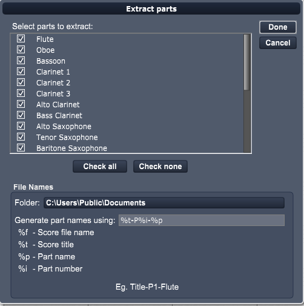

Choose this command to save score parts as individual files. Overture produces the Extract Parts dialog box.

Select parts to extract:
All parts you have created using the Active Parts panel are displayed here. Click on the check box beside the parts you wish to extract to a file. Click Check All to select all parts in list. Click Check none to deselect all parts in the list.
Folder:
Click on the Folder button to choose the destination folder. Be sure to extract your parts into a separate folder. If have not created a folder for the score, you can create the folder while inside the Save Dialog box.
File Names:
In this section you will choose how the files names are generated for each part.
Generate part names using:
Use this text field to format the file name for each part.
Each of the following symbols can be used to format the file names.
%f - The score filename
%t - The score title
%p - The part name
%i - The part number
For example, a score with the title "Broad Horizons" the default %t-P%i-%p produces extracted parts with names like "Broad Horizons-P1-Flute.ovex", "Broad Horizons-P1-Oboe.ovex"
NOTE: We recommended that you use the %i symbol to force names to be stored in score order, because the operating system will display them in alphabetical order within the folder.